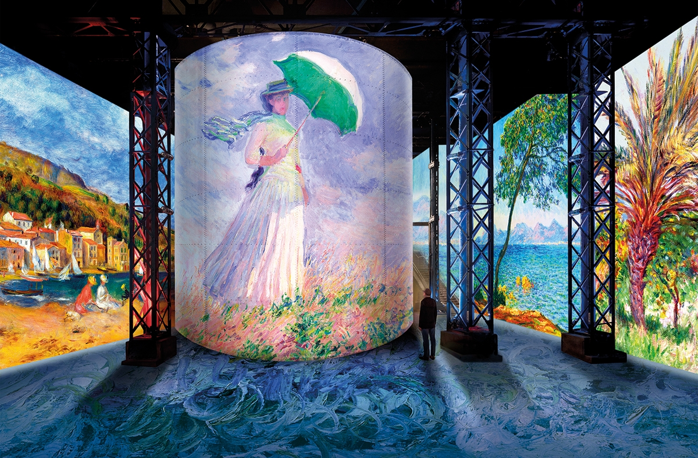

L’Atelier des Lumières a ouvert ses portes depuis le 26 mai 2020. C’est le retour des expositions immersives du premier centre d’art numérique de la capitale, avec de nouvelles mesures sanitaires. Mais comment l'Atelier a-t-il sut faire face au coronavirus ?

Après deux mois de confinement et de longue attente l’activité reprend son cours à Paris. Les musées rouvrent, notamment l’Atelier des Lumières qui est l’un des spots culturels les plus plébiscités par ses expositions immersives qui suscitent l’émerveillement de ses visiteurs. L’Atelier propose actuellement les expositions "Monet, Renoir... Chagall. Voyages en Méditerranée" et l’Infini Bleu d’Yves Klein.
Plus besoin d’aller au musée, c’est le musée qui vient à vous !
L’Atelier des Lumières a réussi à s’adapter face au coronavirus afin de permettre aux visiteurs, ou plutôt, aux utilisateurs de découvrir virtuellement ses différentes expériences. Un rendez-vous nommé « Un jour, une oeuvre » est mis en place. Comme son nom l’indique il propose de découvrir une oeuvre commentée de l’exposition Monet, Renoir… Chagall. Voyage en Méditerranée. Ce rendez-vous se déroule les lundis, mardis, jeudis et vendredis. L’Atelier des Lumières met également en place des activités pour les enfants tous les mercredis. En effet, celui-ci propose plusieurs jeux comme le Memory, le jeu des différences ou même des coloriages. Tous ces jeux tournent évidemment autour de l’art ainsi que des artistes mis en scène à l’intérieur de l’établissement.
L'Atelier est également présent sur les réseaux sociaux
L’Atelier propose également de découvrir les expositions du moment à travers les réseaux sociaux. Chaque jour des vidéos et photos sont mises à disposition sur Facebook, Instagram et Twitter pour faire découvrir leur art. L’exposition Monet, Renoir… Chagall. Voyage en Méditerranée est également disponible sur l’application mobile de l’Atelier. Cette application regroupe également d’autres oeuvres ainsi que des commentaires les concernant. L’Atelier met également en place une frise interactive qui retrace toute son histoire, de la création de la Fonderie du Chemin-Vert à son ouverture au public.
Une ouverture cependant contrôlée…
Afin de permettre le bon déroulement des visites, l’Atelier a mis en place de nombreuses mesures sanitaires. Pour la sécurité de tous les visiteurs, le port du masque est obligatoire tout au long de la visite et une distance d’un mètre entre les visiteurs est obligatoire. Il faut également réserver sur internet la plage horaire que vous souhaitez pour votre visite. L’Atelier des Lumières effectue également un contrôle de température et met également à disposition du gel hydroalcoolique.